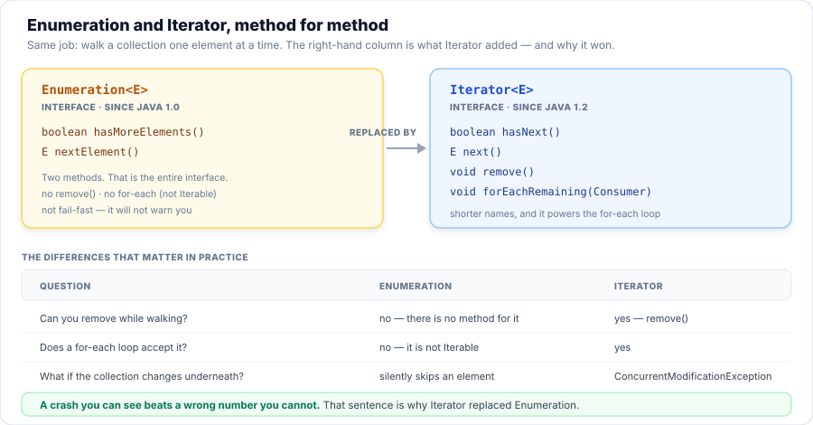
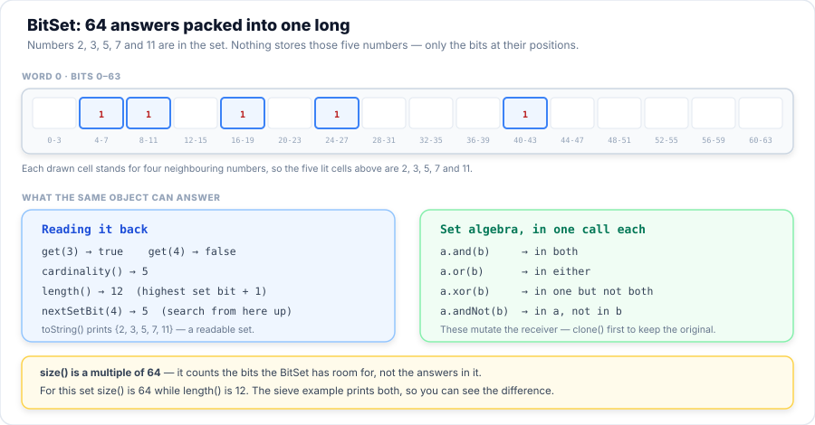
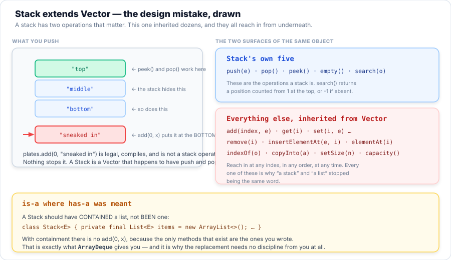
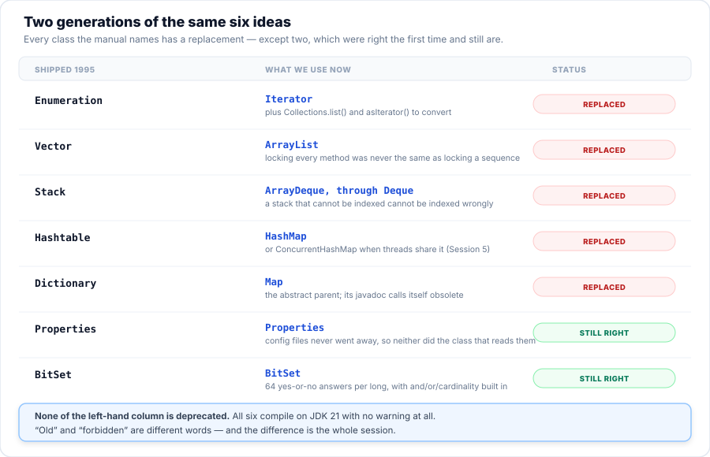

Session 11 — Java Data Structures
Everything you have used so far was designed to be used. Today you meet the classes Java shipped
first: Enumeration, BitSet, Stack and
Dictionary. They are not deprecated, they are not broken, and they are not going
away — they are in code written before you were born, and you will read far more
old code than you write new code. So you will read each one, watch it work, see exactly
where it bites, and learn why each was replaced. Two of the four — BitSet and
Properties — were right the first time and are still the right answer today,
and calling them relics would be teaching you a falsehood.
- Explain what the
Enumerationinterface does, and say the four thingsIteratoradded that made it obsolete. - Find an
Enumerationin the wild — onVector, onHashtable, onProperties— and convert one to aListor anIteratorwith one call. - Describe what a
BitSetstores, and use one to solve a real problem (the sieve of Eratosthenes) rather than to print a set. - Describe the
Stackclasses, and predict whatsearch()returns without running the program. - Prove that
Stack extends Vector, and explain why that inheritance is the design mistake rather than a bonus. - Explain the
Dictionaryclasses: whyDictionaryis abstract, and whatHashtablerefuses thatHashMapaccepts. - Show that legacy does not mean deprecated, by checking
@Deprecatedon the real classes instead of taking anyone's word for it. - Reproduce, diagnose and fix three defects in a 1996-style program where every defect is caused by the choice of class rather than by a careless line.
- Run one check suite against two implementations, and use the result as the evidence that a rewrite changed nothing observable.
- Decide, for a given piece of legacy code, whether to wrap it or rewrite it — and justify the answer.
Your Roadmap for Today
Why This Matters
Here is a number that surprises every class: a working developer spends more time reading
code than writing it, and a large share of the code they read was written before they
joined the company — often before they were born. Java is thirty years old and famously
backwards-compatible: the Vector you will meet on Monday morning in a payment system
is the same class that shipped in 1995, still compiling, still correct, still working. The company
is not going to rewrite it because a book told you to prefer ArrayList.
So the skill this session teaches is not "use the modern class". It is
reading code you did not write, in a style you were not taught, and knowing what it will
do. That is why every claim here is proved by a program rather than asserted: the four
classes from the manual's list are handed out with their real behaviour, including the parts that
will cost you an afternoon if you assume they work like your classes. And it is why two of them are
presented as survivors rather than relics — a developer who deletes Properties
because it sounds old has broken a working application for a slogan.
Stack, which is
called a stack and behaves like a list.
Part 1 of 9 What “Data Structures” Meant in 1995
In Session 1 you met a table with a row for the legacy classes — Vector,
Hashtable, Stack, Enumeration — and a column that told
you what to use instead. That row is true, and today is where it gets filled in. But before any of
that, one question has to be settled, because everything else depends on the answer:
Are these classes deprecated? Students assume yes, and the assumption is
expensive: it leads to deleting working code. The rule in this course is that a fact must be
shown by a program, so this one is not going to be asserted. A class is deprecated only if
it carries the @Deprecated annotation, and that annotation is retained at run time
— which means a program can ask each class directly.
package com.aptech.s11;
import java.lang.reflect.Method;
import java.util.BitSet;
import java.util.Date;
import java.util.Dictionary;
import java.util.Enumeration;
import java.util.Hashtable;
import java.util.Stack;
import java.util.Vector;
/**
* E00 — framing: "legacy" is not a synonym for "deprecated".
*
* The session page claims that the six legacy classes are old but NOT deprecated. Rather than
* assert that, this program proves it: java.lang.Deprecated is declared with
* {@code @Retention(RUNTIME)}, so reflection can see it. If the JDK ever deprecates one of these
* classes, this output changes on its own and the page follows.
*
* Two genuinely deprecated members are checked alongside them as controls, so the result is a
* comparison rather than a lone "false".
*/
public class E00_LegacyIsNotDeprecated {
public static void main(String[] args) {
Class<?>[] legacy = {
Enumeration.class, BitSet.class, Stack.class,
Vector.class, Dictionary.class, Hashtable.class
};
System.out.println("Are the six \"legacy\" classes actually deprecated?");
System.out.println("java.lang.Deprecated is retained at run time, so this is a real test,");
System.out.println("not a reading of the javadoc.");
System.out.println();
for (Class<?> c : legacy) {
System.out.printf(" %-12s deprecated? %s%n",
c.getSimpleName(), c.isAnnotationPresent(Deprecated.class));
}
System.out.println();
System.out.println("Members the JDK did deprecate, checked the same way:");
report(Date.class, "getYear");
report(Thread.class, "stop");
System.out.println();
System.out.println("A legacy method, checked the same way:");
report(Vector.class, "addElement", Object.class);
}
/** Prints whether one method carries @Deprecated, or says so if this JDK no longer has it. */
private static void report(Class<?> owner, String name, Class<?>... params) {
String label = owner.getSimpleName() + "." + name + "()";
try {
Method m = owner.getMethod(name, params);
System.out.printf(" %-18s deprecated? %s%n", label, m.isAnnotationPresent(Deprecated.class));
} catch (NoSuchMethodException e) {
System.out.printf(" %-18s (not present in this JDK)%n", label);
}
}
}
The program reflects over all six legacy classes and prints whether each carries
@Deprecated. It also checks three controls, so that a "false everywhere" bug in the
program would be visible: two methods that genuinely are deprecated, and one legacy method
that is not.
Part 2 of 9 Bullet 1: The Enumeration Interface
Enumeration is how Java 1.0 walked a collection, and it is the smallest interface in
this session: two methods. It is the ancestor of the Iterator you
have used since Session 1, and the two do the same job with different words. The program below
walks one Vector both ways so the difference is visible rather than described.
public static void main(String[] args) {
Vector<String> roll = new Vector<>();
roll.add("Ada");
roll.add("Ben");
roll.add("Chidi");
System.out.println("The same Vector, walked two ways.");
System.out.println();
System.out.println("1. Enumeration - the 1995 way");
for (Enumeration<String> e = roll.elements(); e.hasMoreElements(); ) {
System.out.println(" " + e.nextElement());
}
System.out.println();
System.out.println("2. Iterator - the way you already write");
for (Iterator<String> it = roll.iterator(); it.hasNext(); ) {
System.out.println(" " + it.next());
}
Enumeration has two methods and no more; Iterator added remove(), forEachRemaining(), for-each support and fail-fast detection.Iterator won because it fails loudly. Four things separate them, and
only one of them is about typing: shorter names, remove(),
forEachRemaining(), and — the one that matters — fail-fast
detection. If the collection changes while an Iterator is walking it, you
get a ConcurrentModificationException. An Enumeration says nothing and
quietly gives you the wrong answer. A crash you can see beats a wrong number you cannot
is the reason the Collections Framework was written at all.
Part 3 of 9 Bullet 1: Where You Still Meet It
An obsolete interface is not an absent one. Enumeration still appears in the JDK
itself, in methods that were written in 1995 and cannot be changed without breaking every program
that calls them. The next lines of the same example show the two ways you convert one.
System.out.println();
System.out.println("3. Collections.enumeration(...) - wrapping a modern List");
List<String> modern = List.of("Ada", "Ben", "Chidi");
int seen = 0;
for (Enumeration<String> e = Collections.enumeration(modern); e.hasMoreElements(); ) {
e.nextElement();
seen++;
}
System.out.println(" walked " + seen + " elements with no index to get wrong");
System.out.println();
System.out.println("4. What Iterator adds that Enumeration never had: remove()");
Iterator<String> removable = roll.iterator();
removable.next();
removable.remove();
System.out.println(" after it.next(); it.remove(); -> " + roll);
Iterator<String> wrapped = roll.elements().asIterator();
wrapped.next();
try {
wrapped.remove();
} catch (UnsupportedOperationException ex) {
System.out.println(" the same Vector, but via asIterator() -> "
+ ex.getClass().getName());
}The places it still shows up
| You call | You get | Found on |
|---|---|---|
vector.elements() | an Enumeration | Vector — and therefore on Stack |
hashtable.elements() | an Enumeration of values | Hashtable |
hashtable.keys() | an Enumeration of keys | Hashtable |
properties.propertyNames() | an Enumeration of keys | Properties — Part 8 |
zipFile.entries() | an Enumeration of entries | java.util.zip.ZipFile |
And when a modern library hands you a List but something downstream insists on
an Enumeration, you go the other way with
Collections.enumeration(list) — which is the third thing the example printed.
Since Java 9 there is a fourth route: enumeration.asIterator(), which adapts an old
source to the new interface so the rest of your code never learns where it came from.
Collections.list(enumeration) drains an Enumeration straight into an
ArrayList, and it is the shortest way to get out of 1995. It is also the honest
answer to "how do I sort the keys of a Hashtable?" — collect them, then sort
them, because a hash-backed collection has no order to preserve in the first place.
asIterator() does not add remove()
It returns an Iterator, and Iterator has a remove(), but
calling it throws UnsupportedOperationException — even on a
Vector that can be modified perfectly well. The adapter is read-only because an
Enumeration has no removal operation to forward. If you need to remove while
walking, copy into a real List first, or use iterator().
Part 4 of 9 Bullet 2: The BitSet Class
BitSet is the first of the two survivors, and it is worth being blunt about why: it is
not a legacy class in any useful sense. It has been improved in almost every
release since 1995 — stream() arrived in Java 8, valueOf in Java 9
— and there is still no faster way to hold a set of small non-negative integers.
A BitSet stores no numbers at all. It stores bits, one per possible value:
number n is "in the set" when bit n is 1. Sixty-four answers fit in a
single long, which is why a set of a million booleans costs 128 KB rather than a
megabyte, and why set algebra — and, or, xor — is a handful of machine instructions per
64 numbers instead of a loop.
package com.aptech.s11;
import java.util.BitSet;
/**
* E02 — the BitSet class: a set of non-negative ints, packed one bit each.
*
* Manual bullet 2 of 4: "Describe the BitSet class".
*
* BitSet is the surprise of this session. Every other class here is legacy in the sense of
* "superseded": there is a modern replacement and you should prefer it. BitSet has no
* replacement, because nothing else does what it does — it is not deprecated, and for dense
* sets of small integers it is still the right answer.
*/
public class E02_BitSet {
public static void main(String[] args) {
setOperations();
theSieve();
}
private static void setOperations() {
System.out.println("1. A BitSet is a set of numbers, stored as bits");
BitSet a = new BitSet();
a.set(1);
a.set(3);
a.set(5);
BitSet b = new BitSet();
b.set(3);
b.set(5);
b.set(7);
System.out.println(" a = " + a);
System.out.println(" b = " + b);
System.out.println(" a.cardinality() = " + a.cardinality() + " (how many bits are set)");
BitSet both = (BitSet) a.clone();
both.and(b);
BitSet either = (BitSet) a.clone();
either.or(b);
BitSet exactlyOne = (BitSet) a.clone();
exactlyOne.xor(b);
BitSet onlyA = (BitSet) a.clone();
onlyA.andNot(b);
System.out.println(" a AND b = " + both + " (in both)");
System.out.println(" a OR b = " + either + " (in either)");
System.out.println(" a XOR b = " + exactlyOne + " (in exactly one)");
System.out.println(" a ANDNOT b = " + onlyA + " (in a, but not in b)");
System.out.println();
System.out.println("2. Looking things up without walking the set");
System.out.println(" a.get(3) = " + a.get(3));
System.out.println(" a.get(4) = " + a.get(4));
System.out.println(" a.nextSetBit(0) = " + a.nextSetBit(0));
System.out.println(" a.nextSetBit(2) = " + a.nextSetBit(2));
System.out.println(" a.nextSetBit(4) = " + a.nextSetBit(4));
System.out.println(" a.nextSetBit(6) = " + a.nextSetBit(6) + " (-1 means: no more set bits)");
a.flip(1);
System.out.println(" after a.flip(1) = " + a + " (flip toggles one bit)");
System.out.println(" a.length() = " + a.length() + " (highest set bit + 1)");
System.out.println(" a.size() = " + a.size() + " (room reserved; always a multiple of 64)");
}
private static void theSieve() {
int limit = 60;
// composite[i] is true when i is known NOT to be prime.
BitSet composite = new BitSet(limit + 1);
for (int p = 2; p * p <= limit; p++) {
if (!composite.get(p)) {
for (int multiple = p * p; multiple <= limit; multiple += p) {
composite.set(multiple);
}
}
}
// Start with every number 2..limit, then strike out the composites.
BitSet primes = new BitSet(limit + 1);
primes.set(2, limit + 1);
primes.andNot(composite);
System.out.println();
System.out.println("3. A real use: the sieve of Eratosthenes up to " + limit);
System.out.println(" primes = " + primes);
System.out.println(" cardinality() = " + primes.cardinality() + " primes found");
System.out.println(" length() = " + primes.length() + " bits for the numbers 0 to " + limit);
System.out.println();
System.out.println(" No boolean[" + (limit + 1) + "], no HashSet<Integer>, no boxing: one bit per");
System.out.println(" number, and the whole sieve fits in " + primes.size() / 64 + " long.");
}
}
2, 3, 5, 7, 11 — only the bits at those positions. size() reports the room the set has (64), while length() reports the highest set bit plus one (12).size() is not cardinality(). This trips up everybody
once. cardinality() is how many numbers are in the set; length() is one
past the highest one; size() is how many bits the object has room for, and it is
always a multiple of 64. A set holding {2, 3, 5} reports
cardinality() = 3, length() = 6 and size() = 64 —
three different numbers, all correct, answering three different questions.
BitSet is the right answer today
Whenever the thing you are tracking is a small integer with a bounded range:
attendance, permissions, "which of these 200 features are enabled", "which of these blocks are
free on disk", the classic sieve in this example. The moment your set holds objects, strings or
negative numbers, it is the wrong tool — HashSet is.
Part 5 of 9 Bullet 3: The Stack Classes
Notice the manual's wording: the Stack classes. The plural is doing real
work, and it is the same trick as the Dictionary bullet later. There is a Stack class,
and there is the class it is built on, Vector — and you cannot describe the first
honestly without naming the second.
Start with what a stack is, because Stack gets that part right. It is
last-in-first-out: the most recent thing you put on is the first thing you take off. And it has one
method whose result students almost never predict, which is why it is worth running before reading
the explanation.
private static void lastInFirstOut() {
System.out.println("1. A stack is last in, first out");
Stack<String> plates = new Stack<>();
plates.push("bottom");
plates.push("middle");
plates.push("top");
System.out.println(" pushed bottom, middle, top -> " + plates);
System.out.println(" peek() -> " + plates.peek() + " (look without taking)");
System.out.println(" pop() -> " + plates.pop());
System.out.println(" after pop() -> " + plates);
System.out.println();
}
private static void oneBasedFromTheTop() {
System.out.println("2. search() counts from 1 at the TOP, not 0 at the bottom");
Stack<String> plates = new Stack<>();
plates.push("bottom");
plates.push("middle");
plates.push("top");
System.out.println(" plates.search(\"top\") -> " + plates.search("top") + " (the top is 1)");
System.out.println(" plates.search(\"middle\") -> " + plates.search("middle"));
System.out.println(" plates.search(\"bottom\") -> " + plates.search("bottom"));
System.out.println(" plates.search(\"missing\") -> " + plates.search("missing") + " (-1 when it is not there)");
System.out.println();
System.out.println(" So a Stack's position is 1-based AND measured from the top, while an");
System.out.println(" ArrayList's index is 0-based from the bottom. Code that mixes the two");
System.out.println(" is off by one, and the lab has exactly that bug.");
System.out.println();
}search() is 1-based, and it counts from the top. A stack holding
bottom, middle, top answers search("top") = 1,
search("middle") = 2, search("bottom") = 3, and -1 for
anything not present. An ArrayList's index is 0-based and measured from the bottom,
so code that mixes the two is off by one — and the lab has exactly that bug, written by
somebody who assumed search worked like indexOf.
Part 6 of 9 Bullet 3: Stack Is a Vector
Here is why Stack is no longer recommended, and it has nothing to do with speed.
Stack extends Vector. It does not contain a list — it is
one, with push and pop bolted on. So a "stack" arrives carrying every
method Vector has ever had: get(i), set(i, e),
add(index, element), insertElementAt, remove(i),
indexOf, capacity, setSize. The next two sections of the
example show what that means in practice.
private static void itIsAVector() {
System.out.println("3. Stack extends Vector - so a Stack is a Vector, with everything that implies");
Stack<String> plates = new Stack<>();
plates.push("bottom");
plates.push("top");
System.out.println(" plates instanceof Vector -> " + (plates instanceof Vector));
System.out.println(" plates instanceof List -> " + (plates instanceof List));
plates.add(0, "sneaked in at the bottom");
System.out.println(" after plates.add(0, ...) -> " + plates);
System.out.println(" plates.get(1) -> " + plates.get(1));
System.out.println();
System.out.println(" A stack has two operations that matter. This one has inherited dozens,");
System.out.println(" so it can be reached into at any index, in any order. The design mistake");
System.out.println(" is is-a where has-a was meant: a Stack is not a Vector with extras.");
System.out.println();
}
private static void theGapBetweenTwoCalls() {
System.out.println("4. Every Vector method is synchronized - and that is still not enough");
Vector<String> shelf = new Vector<>();
shelf.add("Ada");
System.out.println(" Start: " + shelf);
System.out.println();
System.out.println(" Two callers each run the SAME two steps: isEmpty(), then remove(0).");
System.out.println(" Each step is locked. Written in an order a scheduler may produce:");
System.out.println();
System.out.println(" A: isEmpty() -> " + shelf.isEmpty());
System.out.println(" B: isEmpty() -> " + shelf.isEmpty());
System.out.println(" A: remove(0) -> " + shelf.remove(0));
try {
shelf.remove(0);
System.out.println(" B: remove(0) -> (no error)");
} catch (RuntimeException ex) {
System.out.println(" B: remove(0) -> " + ex);
}
System.out.println();
System.out.println(" Neither call was interrupted. Neither method was unsafe on its own. The");
System.out.println(" bug lives in the GAP BETWEEN them, and synchronized inside Vector cannot");
System.out.println(" close a gap it cannot see. Locking each step is not locking the sequence.");
System.out.println();
}
add(0, x) compiles, runs, and puts an element at the bottom — which is not a stack operation and cannot be prevented, because a Stack is a Vector.synchronized on every method is not thread safety
Vector locks every method individually, and the check-then-act gap above is what that
buys you: two callers each check isEmpty(), both are told false, both
proceed, and the second remove(0) fails. Neither call was interrupted. Neither method
was unsafe on its own. The bug lives in the gap between them, and
synchronized inside Vector cannot close a gap it cannot see.
Locking each step is not locking the sequence — you met the same shape in Sessions 4 and 5,
and this is the library example of it.
The last section of the example is the replacement, and Session 1 already told you its name.
ArrayDeque, used through the Deque interface, is a stack and a queue in
one class. It is not synchronised, and — the part that matters here — it cannot
be indexed, so the add(0, x) mistake above is not a rule you have to
remember. It is impossible to write.
private static void theReplacement() {
System.out.println("5. The replacement: ArrayDeque, used through the Deque interface");
Deque<String> plates = new ArrayDeque<>();
plates.push("bottom");
plates.push("top");
System.out.println(" push(), push() -> " + plates + " (printed from the head)");
System.out.println(" peek() -> " + plates.peek());
System.out.println(" pop() -> " + plates.pop());
System.out.println(" after pop() -> " + plates);
System.out.println();
System.out.println(" ArrayDeque is a stack and a queue in one class, it is not synchronized, and");
System.out.println(" it cannot be indexed - so the mistake in Part 3 is impossible to make.");
System.out.println(" Prefer it unless you genuinely need Vector's per-method locking.");
}Part 7 of 9 Bullet 4: The Dictionary Classes
The manual says the Dictionary classes again, and again it is plural for a
reason: it is a family of three, and they are related by inheritance.
Dictionary is the abstract parent, Hashtable is its only direct child, and
Properties is Hashtable's child. Its own javadoc calls
Dictionary obsolete and says Map supersedes it — which is a fact the
program can check rather than repeat.
private static void theAbstractParent() {
System.out.println("1. Dictionary is the abstract parent, and Hashtable is its only child");
System.out.println(" Dictionary is abstract? "
+ Modifier.isAbstract(Dictionary.class.getModifiers()));
System.out.println(" Its javadoc says it is obsolete and superseded by Map.");
System.out.println();
Dictionary<String, String> countries = new Hashtable<>();
countries.put("NG", "Nigeria");
countries.put("GH", "Ghana");
countries.put("KE", "Kenya");
System.out.println(" A Dictionary variable holding a Hashtable:");
System.out.println(" countries.get(\"NG\") -> " + countries.get("NG"));
System.out.println(" countries.size() -> " + countries.size());
List<String> codes = new ArrayList<>();
for (Enumeration<String> keys = countries.keys(); keys.hasMoreElements(); ) {
codes.add(keys.nextElement());
}
Collections.sort(codes);
System.out.println(" countries.keys() -> an Enumeration, not an Iterator: " + codes);
System.out.println();
System.out.println(" So bullet 1 and bullet 4 are the same design: the Dictionary family");
System.out.println(" hands out Enumerations. See E01 for what Iterator added.");
System.out.println();
}
private static void noNullsAllowed() {
System.out.println("2. Hashtable refuses null - both values and keys");
Hashtable<String, String> legacy = new Hashtable<>();
legacy.put("NG", "Nigeria");
try {
legacy.put("XX", null);
} catch (NullPointerException ex) {
System.out.println(" hashtable.put(\"XX\", null) -> " + ex);
}
try {
legacy.put(null, "Nowhere");
} catch (NullPointerException ex) {
System.out.println(" hashtable.put(null, \"Nowhere\") -> " + ex);
}
Map<String, String> modern = new HashMap<>();
modern.put("NG", "Nigeria");
modern.put("XX", null);
modern.put(null, "Nowhere");
System.out.println(" hashMap.put(\"XX\", null) -> accepted");
System.out.println(" hashMap.put(null, \"Nowhere\") -> accepted");
System.out.println();
System.out.println(" A HashMap allows ONE null key and any number of null values. A Hashtable");
System.out.println(" allows neither, so \"no value yet\" is a state it cannot even represent.");
System.out.println(" That is the first bug in the lab.");
try {
new ConcurrentHashMap<String, String>().put("XX", null);
} catch (NullPointerException ex) {
System.out.println();
System.out.println(" ConcurrentHashMap (Session 5) also refuses nulls, and deliberately: with");
System.out.println(" several threads, get() returning null could not tell \"not there\" from");
System.out.println(" \"there, and null\".");
}
System.out.println();
}
Properties and BitSet are paired with themselves because they are still the right tool.Hashtable refuses null, and the two failures look different
hashtable.put("XX", null) throws a bare NullPointerException with no
message at all, because Hashtable checks the value itself. hashtable.put(null,
"Nowhere") throws one with a message — Cannot invoke
"Object.hashCode()" because "key" is null — because nothing checked the key; the map
simply tried to hash it. Two nulls, two different failures, and both mean the same
thing: "no value yet" is a state a Hashtable cannot represent. A
HashMap allows one null key and any number of null values.
Session 5 already explained why ConcurrentHashMap refuses null again, and
deliberately: with several threads, get() returning null could not tell
"not there" from "there, and null". That is the same decision the
Hashtable authors made in 1995 for the same reason, and it is worth noticing that the
modern class does not overrule it.
Part 8 of 9 Bullet 4: Properties, the Survivor
Properties is a Hashtable — new Properties() instanceof
Hashtable is true — so it inherits the same refusal of null
and adds getProperty/setProperty on top. It has been in the JDK since 1.0
and it is still the right way to read a configuration file today. Configuration
files never went away, so neither did the class that reads them.
private static void propertiesTheSurvivor() throws IOException {
System.out.println("3. Properties - the member of this family that is still the right tool");
Properties config = new Properties();
try (InputStream in = E04_Dictionary.class.getResourceAsStream("/app.properties")) {
if (in == null) {
throw new IOException("app.properties was not on the classpath");
}
config.load(in);
}
System.out.println(" loaded from app.properties:");
for (String key : new TreeSet<>(config.stringPropertyNames())) {
System.out.println(" " + key + " = " + config.getProperty(key));
}
System.out.println();
System.out.println(" getProperty(\"stock.currency\") -> " + config.getProperty("stock.currency"));
System.out.println(" getProperty(\"stock.lowThreshold\") -> " + config.getProperty("stock.lowThreshold")
+ " (a String, not a number)");
System.out.println(" getProperty(\"missing.key\") -> " + config.getProperty("missing.key")
+ " (null when absent)");
System.out.println(" getProperty(\"missing.key\", \"fallback\") -> " + config.getProperty("missing.key", "fallback"));
System.out.println(" new Properties() instanceof Hashtable -> " + (new Properties() instanceof Hashtable));
System.out.println();
System.out.println(" The last line explains the first: Properties IS a Hashtable, so it inherits");
System.out.println(" the same refusal of nulls and adds getProperty/setProperty on top. It");
System.out.println(" survived because configuration files never went away.");
System.out.println();
}
private static void resourceBundleIsBuiltOnIt() {
System.out.println("4. ResourceBundle is Properties plus a naming rule (Session 9's mechanism)");
ResourceBundle english = ResourceBundle.getBundle("labels", Locale.ENGLISH);
ResourceBundle french = ResourceBundle.getBundle("labels", Locale.FRENCH);
System.out.println(" labels.properties -> greeting=" + english.getString("greeting")
+ ", farewell=" + english.getString("farewell"));
System.out.println(" labels_fr.properties -> greeting=" + french.getString("greeting")
+ ", farewell=" + french.getString("farewell"));
System.out.println();
System.out.println(" report.title exists in the base bundle only. Ask the French one for it:");
System.out.println(" french.getString(\"report.title\") -> " + french.getString("report.title"));
System.out.println();
System.out.println(" No MissingResourceException: a missing translation falls back UP to the");
System.out.println(" base bundle. That fallback is why labels_fr.properties has two lines and");
System.out.println(" labels.properties has three - and it is the same fallback Session 9");
System.out.println(" relied on when a locale was only half translated.");
System.out.println();
System.out.println(" Underneath all of it sits a Properties object reading a .properties file.");
}
The last section is the one that connects this session to Session 9.
ResourceBundle is Properties plus a naming rule. The
Messages.properties and Messages_fr.properties files your registry
already uses are read by exactly this class, and the fallback behaviour Session 9 relied on is
visible here in miniature: labels_fr.properties deliberately has no
report.title key, and asking the French bundle for it returns the English text with
no exception, because a missing translation walks up to the base bundle.
Properties.load(InputStream) reads ISO-8859-1 by specification, not
UTF-8. A file with an accented character saved as UTF-8 will load as mojibake, and if you are
writing a French or Yoruba translation you will meet this within the hour. The supported answers
are \uXXXX escapes in the file, or load(Reader) with an explicit
InputStreamReader naming UTF-8. Session 9's guide uses the escape route; either is
correct, silently assuming UTF-8 is not.
Part 9 of 9 Reading Legacy Code You Didn’t Write
You now know all four bullet classes. The part nobody teaches is what to do when you meet them on Monday. The instinct — rewrite the class — is usually wrong, and it is wrong for a reason that has nothing to do with code quality: the code works, it is in production, and its behaviour is not fully documented anywhere except itself. A rewrite that "keeps the behaviour" is a claim about behaviour nobody has written down.
The technique that does work is to wrap, not rewrite. Put the legacy class behind an interface that describes what you need, implement that interface twice — once delegating to the old code, once using the modern classes — and then run one set of checks against both. That is the pattern you have now met three times in this course, and it is what the Guided Lab below does for real. The check suite becomes the specification the old code never had.
The decision, in one table
| If the legacy code… | Then | Because |
|---|---|---|
| is on a path nothing else touches, and you can test it | Rewrite it | The checks are your safety net, so the risk is bounded |
| is called from everywhere, and its edge cases are unknown | Wrap it | You cannot preserve behaviour you have not written down |
uses Vector or Hashtable in single-threaded code | Rewrite the declaration, keep the shape | The replacements are drop-in; the surprise was only the null handling |
is Properties, BitSet or a ResourceBundle | Leave it alone | These are not obsolete. Changing them is pure risk |
relies on Stack.search() or Enumeration order | Wrap it, and write the checks first | Both have behaviour people routinely guess wrong — including whoever wrote it |
Guided Lab The Stock Ledger
A small shop's stock ledger, written in 1996: a Vector of codes, a
Hashtable of quantities, a Hashtable of prices, a Stack of
pending orders, an Enumeration to walk it, and a Properties file for
configuration. Every choice was the obvious one at the time, and the whole thing compiles on JDK 21
without a single warning.
It also has three defects, and here is the point of the lab: not one of them is a careless line of code. Each one is caused by which class was chosen. You will reproduce all three, explain each one in terms of the class choice, fix them, and prove the fix with a check suite that runs against both the old ledger and a modern one.
Step 1 — the behaviour you must not change
The interface comes first, because it is the specification the 1996 code never had. Read it before you look at either implementation: it says what a ledger does, with no mention of how.
package com.aptech.s11.lab;
/**
* The behaviour the lab has to keep.
*
* This interface is the whole point of the exercise: it describes WHAT a stock ledger does
* without saying which classes do it. The legacy ledger behind it uses Vector, Hashtable,
* Stack and Enumeration; the modern one uses ArrayList, HashMap and ArrayDeque. If both pass
* the same checks, the rewrite changed nothing that anybody can observe.
*/
public interface StockLedger {
/** Adds quantity to a code, creating it if needed. */
void record(String code, int quantity);
/** Sets the unit price. A null price means "not known yet" and must be accepted. */
void setPrice(String code, Integer price);
/** The unit price, or null when it has not been set. */
Integer price(String code);
/** Puts an order on the pending stack. The most recent order is on top. */
void pushOrder(String code);
/** How many pending orders were placed AFTER this one, or -1 when it is not pending. */
int ordersAfter(String code);
/** How many distinct codes the ledger knows about. */
int distinctCodes();
/** Total value of everything held: sum of quantity x price, ignoring codes with no price. */
int totalValue();
/** The currency symbol, read from configuration. */
String currency();
}Step 2 — the 1996 ledger, and its three defects
package com.aptech.s11.lab;
import java.io.IOException;
import java.io.InputStream;
import java.util.Enumeration;
import java.util.Hashtable;
import java.util.Properties;
import java.util.Stack;
import java.util.Vector;
/**
* A stock ledger written the way it would have been written in 1996.
*
* Every choice here was the obvious one at the time: Vector for a growable list, Hashtable for
* a lookup table, Stack for the pending orders, Enumeration to walk them, Properties for config.
* All five compile without a single warning on JDK 21.
*
* It also contains three defects, and each one is caused by which class was chosen rather than
* by a careless line of code. LabCheck shows all three; the lab is to fix them without changing
* the behaviour the interface promises.
*/
public class LegacyStockLedger implements StockLedger {
private final Vector<String> codes = new Vector<>();
private final Hashtable<String, Integer> quantities = new Hashtable<>();
private final Hashtable<String, Integer> prices = new Hashtable<>();
private final Stack<String> pending = new Stack<>();
private final Properties config = new Properties();
public LegacyStockLedger() {
try (InputStream in = LegacyStockLedger.class.getResourceAsStream("/app.properties")) {
if (in != null) {
config.load(in);
}
} catch (IOException ignored) {
// 1996 code did not fuss; the default below keeps the program running.
}
}
@Override
public void record(String code, int quantity) {
if (!codes.contains(code)) {
codes.addElement(code);
}
quantities.put(code, quantity);
}
@Override
public void setPrice(String code, Integer price) {
// DEFECT 1. Hashtable refuses a null value, so "no price yet" cannot be stored at all.
prices.put(code, price);
}
@Override
public Integer price(String code) {
return prices.get(code);
}
@Override
public void pushOrder(String code) {
pending.push(code);
}
@Override
public int ordersAfter(String code) {
// DEFECT 2. search() is 1-based and measured from the top, so the newest order - which
// has nothing after it - answers 1 instead of 0. The count is off by one, always.
return pending.search(code);
}
@Override
public int distinctCodes() {
return codes.size();
}
@Override
public int totalValue() {
int total = 0;
// DEFECT 3. Walking a Vector with an Enumeration while removing from it. An Enumeration
// is not fail-fast, so this does not throw - it silently skips an entry and returns a
// wrong number, which is worse.
Enumeration<String> walk = codes.elements();
while (walk.hasMoreElements()) {
String code = walk.nextElement();
Integer quantity = quantities.get(code);
if (quantity == null || quantity == 0) {
drop(code);
continue;
}
Integer unitPrice = prices.get(code);
if (unitPrice != null) {
total += quantity * unitPrice;
}
}
return total;
}
@Override
public String currency() {
return config.getProperty("stock.currency", "NGN");
}
private void drop(String code) {
codes.removeElement(code);
quantities.remove(code);
prices.remove(code);
}
}Before you run anything, find all three. Two of them are named in comments; the third is not, and it is the one that will cost you the most time in real code because it does not throw:
setPrice(code, null)throws — and "price not known yet" is a state the ledger has to be able to store.ordersAfter(code)is off by one, every time, and you can predict the wrong answer before running it.totalValue()returns a number that is silently wrong — no exception, no warning, just a total that is missing an entry.
Step 3 — one suite, two implementations
The check suite knows nothing about Vector or ArrayList. It talks to the
interface, which is what makes it usable as evidence: it runs against the modern ledger and against
the legacy one, and the difference in results is the bug report.
package com.aptech.s11.lab;
import java.io.IOException;
import java.io.InputStream;
import java.util.ArrayDeque;
import java.util.ArrayList;
import java.util.Deque;
import java.util.HashMap;
import java.util.Iterator;
import java.util.List;
import java.util.Map;
import java.util.Properties;
/**
* The same ledger, same interface, built from the classes Session 1 taught.
*
* Compare it with LegacyStockLedger line by line. Every defect there is gone, and the three
* fixes were all class names:
*
* Vector -> ArrayList (and the iteration bug goes with it)
* Hashtable -> HashMap (which accepts a null value, so "no price yet" exists)
* Stack -> ArrayDeque (which cannot be indexed, so a stack stays a stack)
* Enumeration -> Iterator (which fails fast, so the silent skip becomes a crash)
*
* Properties stays. It is the one class from the legacy family that is still the right tool.
*/
public class ModernStockLedger implements StockLedger {
private final List<String> codes = new ArrayList<>();
private final Map<String, Integer> quantities = new HashMap<>();
private final Map<String, Integer> prices = new HashMap<>();
private final Deque<String> pending = new ArrayDeque<>();
private final Properties config = new Properties();
public ModernStockLedger() {
try (InputStream in = ModernStockLedger.class.getResourceAsStream("/app.properties")) {
if (in != null) {
config.load(in);
}
} catch (IOException ignored) {
// The default below keeps the program running; a real app would log this.
}
}
@Override
public void record(String code, int quantity) {
if (!codes.contains(code)) {
codes.add(code);
}
quantities.put(code, quantity);
}
@Override
public void setPrice(String code, Integer price) {
// No check needed: HashMap accepts a null value, so "not known yet" is representable.
prices.put(code, price);
}
@Override
public Integer price(String code) {
return prices.get(code);
}
@Override
public void pushOrder(String code) {
pending.push(code);
}
@Override
public int ordersAfter(String code) {
// The deque iterates from the head, which push() made the newest order. Count the
// orders we pass on the way to this one: that is how many were placed after it.
int seen = 0;
for (String next : pending) {
if (next.equals(code)) {
return seen;
}
seen++;
}
return -1;
}
@Override
public int distinctCodes() {
return codes.size();
}
@Override
public int totalValue() {
int total = 0;
// Removing through the iterator is legal, which is exactly what the legacy version
// needed and did not have. The list never shifts underneath the loop.
for (Iterator<String> walk = codes.iterator(); walk.hasNext(); ) {
String code = walk.next();
Integer quantity = quantities.get(code);
if (quantity == null || quantity == 0) {
walk.remove();
quantities.remove(code);
prices.remove(code);
continue;
}
Integer unitPrice = prices.get(code);
if (unitPrice != null) {
total += quantity * unitPrice;
}
}
return total;
}
@Override
public String currency() {
return config.getProperty("stock.currency", "NGN");
}
}package com.aptech.s11.lab;
import java.util.function.Supplier;
/**
* One set of checks, run against both ledgers.
*
* This is the whole discipline of the lab. Nothing here knows whether it is talking to the
* legacy ledger or the modern one - it only knows the interface. When the checks come back
* green for both, the rewrite is finished, and that is the only evidence that counts.
*
* Run it before you change anything and read the failures carefully; each one names the legacy
* class that caused it.
*/
public class LabCheck {
private static int passed;
private static int failed;
/** A single check: returns true when the ledger behaved as promised. */
private interface Check {
boolean run();
}
public static void main(String[] args) {
System.out.println("One suite, two implementations.");
System.out.println("The checks below know only the StockLedger interface - not which");
System.out.println("classes are behind it. Run them against both and compare.");
System.out.println();
System.out.println("=== ModernStockLedger (ArrayList, HashMap, ArrayDeque) ===");
suite(ModernStockLedger::new);
System.out.println();
System.out.println("=== LegacyStockLedger (Vector, Hashtable, Stack, Enumeration) ===");
suite(LegacyStockLedger::new);
System.out.println();
System.out.println(passed + " passed, " + failed + " failed.");
System.out.println();
if (failed == 0) {
System.out.println("Both ledgers agree. The rewrite changed nothing observable.");
} else {
System.out.println("Every failure is a legacy class choice, not a careless line:");
System.out.println(" price/unknown - Hashtable refuses a null VALUE");
System.out.println(" orders/after-newest - Stack.search() counts from 1, from the top");
System.out.println(" orders/after-oldest - same off-by-one, one deeper");
System.out.println(" total/skips-empty - Enumeration is not fail-fast, so removing");
System.out.println(" during the walk silently skips an entry");
}
}
private static void suite(Supplier<StockLedger> factory) {
check(factory, "record/counts", () -> {
StockLedger ledger = factory.get();
ledger.record("BOLT", 10);
ledger.record("NUT", 4);
return ledger.distinctCodes() == 2;
});
check(factory, "price/round-trip", () -> {
StockLedger ledger = factory.get();
ledger.record("BOLT", 10);
ledger.setPrice("BOLT", 250);
return Integer.valueOf(250).equals(ledger.price("BOLT"));
});
check(factory, "price/unknown-is-null", () -> {
StockLedger ledger = factory.get();
ledger.record("NUT", 4);
ledger.setPrice("NUT", null);
return ledger.price("NUT") == null;
});
check(factory, "total/simple", () -> {
StockLedger ledger = factory.get();
ledger.record("BOLT", 10);
ledger.setPrice("BOLT", 250);
ledger.record("NUT", 4);
ledger.setPrice("NUT", 50);
return ledger.totalValue() == 2700;
});
check(factory, "total/ignores-unpriced", () -> {
StockLedger ledger = factory.get();
ledger.record("BOLT", 10);
ledger.setPrice("BOLT", 250);
ledger.record("NUT", 4); // no price set at all
return ledger.totalValue() == 2500;
});
check(factory, "orders/after-newest-is-0", () -> {
StockLedger ledger = factory.get();
ledger.pushOrder("A");
ledger.pushOrder("B");
return ledger.ordersAfter("B") == 0;
});
check(factory, "orders/after-oldest", () -> {
StockLedger ledger = factory.get();
ledger.pushOrder("A");
ledger.pushOrder("B");
ledger.pushOrder("C");
return ledger.ordersAfter("A") == 2;
});
check(factory, "orders/unknown-is-minus-1", () -> {
StockLedger ledger = factory.get();
ledger.pushOrder("A");
return ledger.ordersAfter("ZZ") == -1;
});
check(factory, "total/skips-empty-without-losing-others", () -> {
StockLedger ledger = factory.get();
ledger.record("BOLT", 10);
ledger.setPrice("BOLT", 100);
ledger.record("NUT", 0); // an empty line, priced but holding nothing
ledger.setPrice("NUT", 50);
ledger.record("WASHER", 5);
ledger.setPrice("WASHER", 10);
ledger.record("SCREW", 2);
ledger.setPrice("SCREW", 20);
// 10x100 + 0x50 + 5x10 + 2x20 = 1090
return ledger.totalValue() == 1090;
});
check(factory, "config/currency-from-properties", () -> {
StockLedger ledger = factory.get();
return "NGN".equals(ledger.currency());
});
}
private static void check(Supplier<StockLedger> factory, String name, Check body) {
try {
if (body.run()) {
passed++;
System.out.printf(" PASS %s%n", name);
} else {
failed++;
System.out.printf(" FAIL %s (wrong answer)%n", name);
}
} catch (RuntimeException ex) {
failed++;
System.out.printf(" FAIL %s (threw %s)%n", name, ex);
}
}
}Run it as it stands. The modern ledger should pass everything; the legacy one should not:
Step 4 — fix them without touching the interface
- Defect 1 — change the price table from
HashtabletoHashMapand the method becomes correct as written, because aHashMapaccepts anullvalue. If you must keepHashtable, you needcontainsKeyto tell "no price yet" from "not in the catalogue" — and now every reader has to know that rule. - Defect 2 —
search()counts from 1 at the top, so the number of orders placed after one issearch() - 1, and-1must stay-1when the code is not pending at all. The honest fix is not arithmetic onsearch(): it is to use aDeque, which cannot be searched by position and makes you count deliberately. - Defect 3 — an
Enumerationis not fail-fast, so removing during the walk shifts the entries left and the loop steps straight over one. Either collect what you want to remove and drop it after the loop, or use anIteratorand itsremove(). The second is shorter and turns a silent wrong answer into a crash if you ever get it wrong again.
Hashtable → HashMap,
Stack → Deque/ArrayDeque, Enumeration →
Iterator. Not one line of logic needed rewriting, and the interface never changed.
That is the honest version of "legacy code is dangerous": the danger is concentrated in four class
names, and knowing them is most of the job.
⚠️ Common Mistakes
Every message below is the real one, copied from a run of the code on this page. If you see it, you are in the right place.
Stack.search() treated as 0-based
search() returns the position counted from 1, from the top, or
-1. Writing if (stack.search(x) == 0) to mean "on top" is never true, and
using the result as "how many are after it" is off by one in every case. If you have to reason
about positions rather than just the top, you want a Deque, not a Stack.
null in a Hashtable
hashtable.put("XX", null) throws java.lang.NullPointerException —
with no message, which makes it hard to find. hashtable.put(null, "Nowhere") throws
java.lang.NullPointerException: Cannot invoke "Object.hashCode()" because "key" is
null. Both are by design. If "no value yet" is a real state, the class is wrong, not the
call: use a HashMap.
Vector while an Enumeration walks it
No exception. No warning. A wrong answer. Removing an element shifts the ones
after it left by one, and the Enumeration keeps incrementing its index, so it skips
the next entry entirely. This is the lab's third defect, and it is the most dangerous shape in the
whole session precisely because it is silent.
asIterator().remove() to work
It throws java.lang.UnsupportedOperationException, even on a mutable
Vector. The adapter is read-only because Enumeration has no removal
operation to forward. Copy into a List first, or call iterator()
instead.
remove(0) on an empty Vector
The message is the old one: java.lang.ArrayIndexOutOfBoundsException: Array index out of
range: 0 — not the modern "Index 0 out of bounds for length 0" you see from
an ArrayList. Old classes carry old messages, which is why searching the exact string
you saw matters. The deeper point: the check and the removal are two separate calls, and the gap
between them is where the bug lives.
.properties file is UTF-8
Properties.load(InputStream) reads ISO-8859-1 by specification. An
accented character saved as UTF-8 loads as mojibake — no exception, just wrong text in a
user-facing message. Use \uXXXX escapes, or load with a Reader that
names UTF-8 explicitly.
Properties class from a working
application because it "sounds old" breaks configuration loading; deleting a BitSet
because it is 1995 breaks whatever index it was holding. Run E00 before you touch
either: isAnnotationPresent(Deprecated.class) is a one-line answer to a question
people argue about for an hour.
BitSet.size() with cardinality()
cardinality() is how many numbers are in the set. length() is one past
the highest. size() is the room the object has, always a multiple of 64. Iterating to
size() instead of length() means visiting up to 64 bits of nothing, and
using size() as "how many are in it" is simply wrong.
Stack at an index
stack.add(0, x) and stack.set(2, y) compile, run, and are not stack
operations. They work because Stack extends Vector, and the compiler cannot help you.
This is the is-a-where-has-a-was-meant mistake from Session 9 in library form, and the fix is to
use Deque, which has no index to reach for.
Hashtable and reading the order as meaning
A hash-backed collection has no order to print. Two runs, two JVMs or two key sets give different
sequences, so a test that asserts on the printed order of a Hashtable is a test that
passes on your machine. Collect the keys, sort them, then print — which is what every
example on this page does.
🧠 Knowledge Check
Ten questions on the whole session. Several have more than one defensible answer — if you disagree with one, argue it, because that is exactly what happens in a code review when somebody proposes deleting a legacy class.
@Deprecated on JDK 21?deprecated? false in E00. Date.getYear() and Thread.stop() are the controls: they really are deprecated, which is what proves the check is working rather than always answering false.Stack holds bottom, middle, top (top pushed last). What is search("top")?"middle" is 2 and "bottom" is 3, and anything absent is -1. The lab's second defect is somebody treating this as an ArrayList index.new Hashtable<String, String>().put("k", null) do?null key throws a different NPE, the one with Cannot invoke "Object.hashCode()" because "key" is null. That asymmetry — one checked value, one unchecked key — is worth remembering when you are hunting a bare NPE in old code.Properties is a subclass of which class?new Properties() instanceof Hashtable is true, and it inherits the null refusal. The chain is Dictionary → Hashtable → Properties: three generations, and the middle one is why the plural in the manual's bullet is right.vector.elements().asIterator().remove() throw UnsupportedOperationException?Vector is perfectly mutable — vector.iterator().remove() works on the very same object. The adapter is read-only because the interface it wraps has two methods and neither of them removes.Deque gives you push, pop and peek, cannot be indexed, and lets you swap the implementation later. Session 1 said this; today you found out why.BitSet has bits set for 2, 3 and 5. What does size() return?size() is the room the set has — always a multiple of 64. cardinality() = 3 is how many are in it, and length() = 6 is one past the highest.Vector while walking it with an Enumeration. What happens?Enumeration is not fail-fast. Removing shifts the following entries left, the index keeps advancing, and entries get skipped — so a sum that should be 9 comes back as 1. An Iterator in the same situation throws, which is why it replaced this.Dictionary?Modifier.isAbstract(Dictionary.class.getModifiers()) is true, and its own javadoc says it is obsolete and that Map supersedes it. Hashtable is its only direct child — and it is not deprecated either.if (!vector.isEmpty()) vector.remove(0); on a one-element Vector. Every Vector method is synchronized. What happens?synchronized inside Vector — which is the whole reason per-method locking was never a thread-safety guarantee, and why the modern advice is to synchronise on the sequence yourself (Sessions 4 and 5).💪 Practice
Six programs, in rising order of difficulty, each in code/s11-data-structures under
practice/. The output below each one is what it actually printed. Try it before you
open the file: in every one of these, the interesting part is a claim in the title, and you should
want to check it rather than be told.
🌱 Easy 1: get data out of an Enumeration
You are handed a legacy source that offers nothing but an Enumeration. Get the data
out four ways: the 1996 while loop, the one-call replacement, a
for loop over asIterator(), and a filtered copy. Then find the one
thing an Enumeration cannot do.
The last section is the point of the exercise: asIterator() gives you an
Iterator, but it is a read-only one, and the reason is not a bug.
💡 Hint
Two methods in the JDK do all the work here: Collections.list(enumeration) drains
one into an ArrayList, and Enumeration.asIterator() adapts one to
the modern interface. For the filtered copy, remember that List has had
removeIf since Java 8 — you never need to write that loop by hand.
✅ Solution
Run it: java -cp target/classes com.aptech.s11.practice.P1_EnumeratingLegacy
package com.aptech.s11.practice;
import java.util.ArrayList;
import java.util.Collections;
import java.util.Enumeration;
import java.util.Iterator;
import java.util.List;
import java.util.Vector;
/**
* P1 - Bullet 1, the Enumeration interface.
*
* You are handed a legacy source that offers nothing but an Enumeration. Get data out of it
* four ways, and find the one thing an Enumeration cannot do.
*/
public class P1_EnumeratingLegacy {
public static void main(String[] args) {
Vector<String> cohort = new Vector<>(List.of("Ada", "Ben", "Chidi", "Dara", "Eze"));
System.out.println("1. The 1996 loop: an Enumeration, walked by hand");
List<String> byHand = new ArrayList<>();
Enumeration<String> walk = cohort.elements();
while (walk.hasMoreElements()) {
byHand.add(walk.nextElement());
}
System.out.println(" " + byHand);
System.out.println();
System.out.println("2. The one-call replacement: Collections.list");
System.out.println(" " + Collections.list(cohort.elements()));
System.out.println();
System.out.println("3. An Enumeration is not an Iterable, so a for-each needs asIterator()");
int vowels = 0;
for (Iterator<String> it = cohort.elements().asIterator(); it.hasNext(); ) {
String name = it.next();
if ("AEIOU".indexOf(name.charAt(0)) >= 0) {
vowels++;
}
}
System.out.println(" names starting with a vowel -> " + vowels);
System.out.println();
System.out.println("4. What is missing: asIterator() has no remove()");
Iterator<String> readOnly = cohort.elements().asIterator();
readOnly.next();
try {
readOnly.remove();
} catch (UnsupportedOperationException ex) {
System.out.println(" remove() -> " + ex);
}
System.out.println(" An Enumeration has no remove(), and asIterator() does not invent one.");
System.out.println(" To take things out, copy into a real List first:");
List<String> copy = new ArrayList<>(cohort);
copy.removeIf(name -> name.startsWith("B"));
System.out.println(" " + copy);
}
}🌱 Easy 2: attendance with a BitSet
Twelve students, two days of attendance. Answer five questions: who came both days, who came
either day, who came only on day one, who missed both, and how many came each day. Then print
size() and length() beside cardinality() so the three
numbers can be compared.
The trap is that and(), or() and andNot() all
mutate the receiver. Mutating day1 here would destroy the data the
next question needs, so every helper clones first.
💡 Hint
day1.and(day2) leaves the answer in day1 and throws away the
original. Write four tiny helpers that each do BitSet r = (BitSet) a.clone();
then the operation, then return r; — four lines each, and the rest of the
program reads like set algebra. For "missed both", build a full set with
set(1, 13) — from-inclusive, to-exclusive — and
andNot the union.
✅ Solution
Run it: java -cp target/classes com.aptech.s11.practice.P2_BitSetAttendance
package com.aptech.s11.practice;
import java.util.BitSet;
/**
* P2 - Bullet 2, the BitSet class.
*
* A register of twelve students, two days of attendance. A BitSet answers set questions about
* them in one line each - which is what it is for.
*/
public class P2_BitSetAttendance {
public static void main(String[] args) {
BitSet day1 = new BitSet();
BitSet day2 = new BitSet();
for (int id : new int[] {1, 2, 4, 5, 7, 9, 10, 12}) {
day1.set(id);
}
for (int id : new int[] {2, 3, 4, 6, 7, 9, 11}) {
day2.set(id);
}
System.out.println("day1 " + day1);
System.out.println("day2 " + day2);
System.out.println();
System.out.println("present both " + and(day1, day2));
System.out.println("present either " + or(day1, day2));
System.out.println("day1 only " + andNot(day1, day2));
System.out.println("missed both " + missedBoth(day1, day2));
System.out.println();
System.out.println("came on day1 " + day1.cardinality() + " students");
System.out.println("came on day2 " + day2.cardinality() + " students");
System.out.println("first on day1 " + day1.nextSetBit(0));
System.out.println("after 7 on day1 " + day1.nextSetBit(8));
System.out.println();
System.out.println("One long holds 64 answers, so the space is round:");
System.out.println("size() " + day1.size() + " bits, always a multiple of 64");
System.out.println("length() " + day1.length() + " bits up to the highest student");
System.out.println();
System.out.println("A boolean[13] would spend 13 separate bytes on the same 12 answers,");
System.out.println("and would have no and(), or() or cardinality() to ask with.");
}
private static BitSet and(BitSet a, BitSet b) {
BitSet result = (BitSet) a.clone();
result.and(b);
return result;
}
private static BitSet or(BitSet a, BitSet b) {
BitSet result = (BitSet) a.clone();
result.or(b);
return result;
}
private static BitSet andNot(BitSet a, BitSet b) {
BitSet result = (BitSet) a.clone();
result.andNot(b);
return result;
}
/** Students 1..12 who are in neither day. */
private static BitSet missedBoth(BitSet day1, BitSet day2) {
BitSet all = new BitSet();
all.set(1, 13);
all.andNot(or(day1, day2));
return all;
}
}💪 Medium 1: bracket matching with a Stack
Five samples, some balanced and some not, each with a different kind of failure: a
close with nothing open, a mismatched pair, and an opener that is never closed. Report which
kind each one is rather than a bare true/false.
Then the second half asks search() for each bracket in a three-deep stack, so you
can see 1-based-from-the-top with your own eyes instead of taking Part 5's word for it.
💡 Hint
Push every opener. On a closer, the only thing that matters is the most recent
opener — which is exactly what pop() gives you, and exactly why this problem
is the canonical stack exercise. The three failure messages come from three places: an empty
stack on a closer, a non-matching top after the pop, and a non-empty stack at the end.
✅ Solution
Run it: java -cp target/classes com.aptech.s11.practice.P3_StackBrackets
package com.aptech.s11.practice;
import java.util.Stack;
/**
* P3 - Bullet 3, the Stack classes.
*
* Bracket matching is the exercise a stack exists for: what you have to remember is what was
* opened last, and that is exactly what a stack hands back first.
*/
public class P3_StackBrackets {
public static void main(String[] args) {
String[] samples = {
"a(b[c]d)e",
"a(b[c)d]e",
"()",
"())",
"((",
"no brackets here",
};
for (String sample : samples) {
System.out.printf("%-18s -> %s%n", sample, check(sample));
}
System.out.println();
System.out.println("The stack also answers WHERE something sits, counted from the top:");
Stack<Character> open = new Stack<>();
open.push('(');
open.push('[');
open.push('{');
System.out.println(" the stack " + open + " (printed bottom first)");
System.out.println(" open.search('{') -> " + open.search('{') + " (on top)");
System.out.println(" open.search('[') -> " + open.search('['));
System.out.println(" open.search('(') -> " + open.search('(') + " (deepest)");
System.out.println(" open.search(')') -> " + open.search(')') + " (not there at all)");
System.out.println();
System.out.println(" Counted from 1, from the top - not from 0 at the bottom.");
}
private static String check(String text) {
Stack<Character> open = new Stack<>();
for (char c : text.toCharArray()) {
if (c == '(' || c == '[' || c == '{') {
open.push(c);
} else if (c == ')' || c == ']' || c == '}') {
if (open.isEmpty()) {
return "closing '" + c + "' with nothing open";
}
char top = open.pop();
if (partnerOf(top) != c) {
return "'" + top + "' was closed by '" + c + "'";
}
}
}
if (!open.isEmpty()) {
return "never closed: " + open;
}
return "balanced";
}
private static char partnerOf(char opener) {
return switch (opener) {
case '(' -> ')';
case '[' -> ']';
default -> '}';
};
}
}💪 Medium 2: “no price yet” in a Hashtable
A product may exist with no price set yet. Store that state in a Hashtable —
and then in a HashMap — and compare what each costs you.
Two workarounds are shown for the Hashtable, because both are in real codebases and
you will meet them: a sentinel value, and presence-means-priced. Then the same requirement in a
HashMap, plus the one thing neither get() can tell you.
💡 Hint
get() returns null both when a key maps to null and
when the key is absent, so get() alone cannot distinguish "no price yet" from
"not in the catalogue" — on either class. containsKey() is what separates
them, and that is the honest reason the HashMap is better here: it lets you ask
both questions and get two different answers.
✅ Solution
Run it: java -cp target/classes com.aptech.s11.practice.P4_NoPriceYet
package com.aptech.s11.practice;
import java.util.HashMap;
import java.util.Hashtable;
import java.util.Map;
/**
* P4 - Bullet 4, the Dictionary classes.
*
* A product may exist with no price yet. That single requirement is where Hashtable cannot
* follow, and the workarounds people invented for it are worth seeing once.
*/
public class P4_NoPriceYet {
public static void main(String[] args) {
System.out.println("The requirement: a product may exist with no price set yet.");
System.out.println();
Hashtable<String, Integer> legacy = new Hashtable<>();
legacy.put("BOLT", 250);
System.out.println("1. Hashtable - store the unknown price directly");
try {
legacy.put("NUT", null);
} catch (NullPointerException ex) {
System.out.println(" legacy.put(\"NUT\", null) -> " + ex);
}
System.out.println();
System.out.println("2. Workaround A: pick a number to mean \"no price\"");
legacy.put("NUT", -1);
System.out.println(" price(NUT) -> " + legacy.get("NUT") + " (is -1 a price, or a flag?)");
System.out.println(" Every reader now has to know the convention. One will forget.");
System.out.println();
System.out.println("3. Workaround B: presence in the table means priced");
legacy.remove("NUT");
String code = "NUT";
Integer price = legacy.containsKey(code) ? legacy.get(code) : null;
System.out.println(" price(NUT) -> " + price + " (correct, and two lookups)");
System.out.println();
System.out.println("4. HashMap - the unknown price is a value like any other");
Map<String, Integer> modern = new HashMap<>();
modern.put("BOLT", 250);
modern.put("NUT", null);
System.out.println(" price(NUT) -> " + modern.get("NUT"));
System.out.println(" containsKey -> " + modern.containsKey("NUT"));
System.out.println(" price(WASHER) -> " + modern.get("WASHER") + " (a code never recorded)");
System.out.println(" containsKey -> " + modern.containsKey("WASHER"));
System.out.println();
System.out.println(" get() alone cannot tell \"no price yet\" from \"not in the catalogue\".");
System.out.println(" containsKey() is what separates them - and it works on either class.");
}
}💪 Medium 3: configuration with defaults
Three settings with sensible defaults, overridden per site. Show that a Properties
object can carry its own Properties as a chain of defaults — and that
size() does not count them, while stringPropertyNames() still finds
them.
Then load the real app.properties off the classpath, read a value, and override it
in code so you can see that the file on disk is untouched.
💡 Hint
The constructor is new Properties(defaults) — one argument, and it is the
parent whose keys are consulted when a lookup misses. getProperty(key, fallback)
is the other half: it returns the fallback instead of null, so a missing key
cannot turn into a NullPointerException three lines later. Load the file with
getResourceAsStream("/app.properties") inside try-with-resources — the
leading slash means "from the root of the classpath", which is why the file lives in
src/main/resources.
✅ Solution
Run it: java -cp target/classes com.aptech.s11.practice.P5_ConfigWithDefaults
package com.aptech.s11.practice;
import java.io.IOException;
import java.io.InputStream;
import java.util.Properties;
import java.util.TreeSet;
/**
* P5 - Bullet 4 continued: Properties, the member of the Dictionary family still in daily use.
*
* Two things make Properties more than a Hashtable<String,String>: a chain of defaults, and
* getProperty with a fallback that never throws and never returns null.
*/
public class P5_ConfigWithDefaults {
public static void main(String[] args) throws IOException {
Properties defaults = new Properties();
defaults.setProperty("host", "localhost");
defaults.setProperty("port", "5432");
defaults.setProperty("ssl", "false");
Properties site = new Properties(defaults);
site.setProperty("port", "6543");
System.out.println("1. A Properties can carry its own defaults");
System.out.println(" site.getProperty(\"port\") -> " + site.getProperty("port") + " (set on the site)");
System.out.println(" site.getProperty(\"host\") -> " + site.getProperty("host") + " (from defaults)");
System.out.println(" site.getProperty(\"ssl\") -> " + site.getProperty("ssl") + " (from defaults)");
System.out.println(" site.size() -> " + site.size() + " (defaults are not copied in)");
System.out.println(" but they are searched when walking:");
for (Object key : new TreeSet<>(site.stringPropertyNames())) {
System.out.println(" " + key + " = " + site.getProperty((String) key));
}
System.out.println();
System.out.println("2. Asking for something that is not there");
System.out.println(" getProperty(\"user\") -> " + site.getProperty("user"));
System.out.println(" getProperty(\"user\", \"guest\") -> " + site.getProperty("user", "guest"));
System.out.println();
System.out.println("3. Loading the real file, then overriding one key in code");
Properties config = new Properties();
try (InputStream in = P5_ConfigWithDefaults.class.getResourceAsStream("/app.properties")) {
if (in == null) {
throw new IOException("app.properties was not on the classpath");
}
config.load(in);
}
System.out.println(" stock.lowThreshold from the file -> " + config.getProperty("stock.lowThreshold"));
config.setProperty("stock.lowThreshold", "2");
System.out.println(" after overriding in code -> " + config.getProperty("stock.lowThreshold"));
System.out.println(" (the file is untouched; this is the in-memory copy)");
}
}🔥 Challenge: three ways to modify a list while walking it
Sum the odd numbers and remove the even ones, three times, with three different tools: an
Enumeration over a Vector, an Iterator with
remove(), and a for-each over an ArrayList.
Before you run it, write down what you think each one does. The correct sum is 9. Two of the three are wrong, and only one of the wrong ones tells you — which of the two is silent, and why, is the whole of Session 11 in one program.
💡 Hint
Trace it by hand with a six-element list and keep two counters: the position you are reading,
and the length of the list after each removal. The Enumeration's index only ever
goes up; the elements move down when one is removed. Those two facts are the entire bug, and
they explain why 3 and 5 are never added.
✅ Solution
Run it: java -cp target/classes com.aptech.s11.practice.P6_ModifyWhileWalking
package com.aptech.s11.practice;
import java.util.ArrayList;
import java.util.ConcurrentModificationException;
import java.util.Enumeration;
import java.util.Iterator;
import java.util.List;
import java.util.Vector;
/**
* P6 - challenge. Three ways to walk a list and take things out of it.
*
* Two of the three are wrong, and only one of the wrong ones tells you. Work out which is
* which before you run it.
*/
public class P6_ModifyWhileWalking {
public static void main(String[] args) {
System.out.println("Task: sum the odd numbers, and remove the even ones on the way.");
System.out.println("The correct sum is 1 + 3 + 5 = 9. Watch what each loop really does.");
System.out.println();
System.out.println("1. Enumeration, removing during the walk");
Vector<Integer> legacy = new Vector<>(List.of(1, 2, 3, 4, 5, 6));
int seen = 0;
Enumeration<Integer> walk = legacy.elements();
while (walk.hasMoreElements()) {
Integer n = walk.nextElement();
if (n % 2 == 0) {
legacy.remove(n);
} else {
seen += n;
}
}
System.out.println(" odd numbers summed -> " + seen);
System.out.println(" list afterwards -> " + legacy);
System.out.println(" No exception. Also no 3 and no 5: removing shifted the entries left,");
System.out.println(" so the walk stepped straight over them. An Enumeration is not fail-fast.");
System.out.println();
System.out.println("2. Iterator, removing through the iterator");
List<Integer> modern = new ArrayList<>(List.of(1, 2, 3, 4, 5, 6));
int total = 0;
for (Iterator<Integer> it = modern.iterator(); it.hasNext(); ) {
Integer n = it.next();
if (n % 2 == 0) {
it.remove();
} else {
total += n;
}
}
System.out.println(" odd numbers summed -> " + total);
System.out.println(" list afterwards -> " + modern);
System.out.println();
System.out.println("3. for-each, removing from the list itself");
try {
List<Integer> list = new ArrayList<>(List.of(1, 2, 3, 4, 5, 6));
for (Integer n : list) {
if (n % 2 == 0) {
list.remove(n);
}
}
System.out.println(" no exception - unexpected, see the note below");
} catch (ConcurrentModificationException ex) {
System.out.println(" for-each + list.remove(n) -> " + ex);
}
System.out.println(" Same mistake as loop 1, caught this time. ArrayList's iterator counts");
System.out.println(" its own changes and refuses to carry on.");
System.out.println();
System.out.println(" Three loops, one intent, three different outcomes. The class you chose");
System.out.println(" decided whether you got the right answer, a crash, or a silent lie.");
}
}📺 Further Study
Read (official & trusted)
-
Java 21 API —
Enumeration— two method signatures. Read the whole page in ninety seconds and note thatasIterator()is documented as a default method added in Java 9. -
Java 21 API —
BitSet— the class list of this session's survivors. Comparesize(),length()andcardinality()in the official wording. -
Java 21 API —
Stack— scroll to the top of the page. The first sentence of the class description says "a more complete and consistent set of LIFO stack operations is provided by theDequeinterface". That is the JDK telling you what Part 6 told you. -
Java 21 API —
Dictionary— note the word obsolete in the class description, and that this is the one place in the session where the JDK does the telling. -
Java 21 API —
Properties— read theload(InputStream)paragraph on ISO-8859-1 and the\uXXXXescape rule. It is the single most surprising fact on this page.
Watch
Each video was checked to exist and match the topic.
Stack, walked through method by method. Watch it with one question in mind — which of these methods has no business existing on a stack?push, pop, peek and search demonstrated, including what pop on an empty stack throws. A second voice on the same four methods is worth ten minutes before the lab.BitSets built by divisibility, then and(), or() and xor() printed side by side — the same set algebra as this page's Figure 2, from a different starting point.setProperty, getProperty and the defaults chain. Watch after Practice 5, not before: you will follow it much faster having written one yourself.📋 Cheat Sheet — the whole session in two screens
The four bullets, and the class behind each
- 1.
Enumeration—hasMoreElements(),nextElement(). Two methods, noremove(), not fail-fast, notIterable. - 2.
BitSet— bits packed intolong[];set,get,flip,and/or/xor/andNot,cardinality,length,nextSetBit. - 3.
Stack—push,pop,peek,empty,search. Itextends Vector, which is the problem. - 4.
Dictionary— abstract and obsolete;Hashtableits only child;Propertiesthe survivor below it.
The counting rules you must not guess
Stack.search(x)→ position from the top, starting at 1;-1if absent.ArrayList.indexOf(x)→ index from the bottom, starting at 0;-1if absent.BitSet.cardinality()→ how many are in it.length()→ one past the highest.size()→ room, a multiple of 64.BitSet.set(from, to)→ from inclusive, to exclusive. Same rule assubListandString.substring.
The replacements, in one line each
Enumeration→Iterator; to convert,Collections.list(e)ore.asIterator().Vector→ArrayList(→CopyOnWriteArrayListwhen readers outnumber writers).Stack→ArrayDequethroughDeque.Hashtable→HashMap;ConcurrentHashMapwhen threads share it.Dictionary→Map.Properties→ nothing. It is still correct.BitSet→ nothing. It is still correct.
What each legacy class refuses
Hashtable.put(k, null)→NullPointerException, no message.Hashtable.put(null, v)→NullPointerException: Cannot invoke "Object.hashCode()" because "key" is null.Enumeration→ noremove().asIterator().remove()→UnsupportedOperationException.Vector.remove(0)when empty →ArrayIndexOutOfBoundsException: Array index out of range: 0(the old message).Stack.pop()when empty →EmptyStackException.Dictionary→ cannot be instantiated; it is abstract.
Prove it instead of believing it
SomeClass.class.isAnnotationPresent(Deprecated.class)→ is it deprecated, asked directly?Modifier.isAbstract(SomeClass.class.getModifiers())→ is it abstract?x instanceof Vector→ is this "stack" really a list?
The lab, in four lines
Hashtable→HashMap: "no price yet" becomes storable.Stack.search()→ count with aDeque: the off-by-one disappears.Enumeration+ remove →Iterator.remove(): the silent wrong total becomes a crash.- One suite, two implementations: the checks are the specification the old code never had.
Deciding what to do on Monday
- Testable and barely used → rewrite.
- Everywhere, unknown edges → wrap, and write the checks first.
Properties,BitSet,ResourceBundle→ leave it alone.
🎓 Session Summary
- Legacy is not deprecated. All six classes print
deprecated? falseon JDK 21 and compile with no warning. They are superseded, not forbidden — and the difference is the difference between improving code and breaking it. - Prove a fact about a class by asking the class.
isAnnotationPresent(Deprecated.class)settles in one line what people argue about for an hour, and this course does not put a fact on a page that a program has not shown. Enumerationis two methods and no removal.hasMoreElements()andnextElement()were enough in 1995 and are not enough now.Iteratorwon because it fails loudly.remove(),forEachRemaining(), for-each support — and fail-fast detection, which turns a silent wrong answer into a crash you can act on.- You will still meet
Enumeration.Vector.elements(),Hashtable.keys(),Properties.propertyNames(),ZipFile.entries().Collections.list(e)drains one;e.asIterator()adapts one, read-only, because there is noremoveto forward. BitSetis a survivor, not a relic. Sixty-four answers perlong, with set algebra as machine instructions andstream()added in Java 8. Use it whenever the thing you are tracking is a small bounded integer.size(),length()andcardinality()answer three different questions. Room, highest-plus-one, and how many. Confusing them is the most commonBitSetbug there is.Stack.search()counts from 1 at the top. Not 0, not from the bottom. If you need positions rather than the top, you want aDeque.Stack extends Vector, and that is the design mistake. A stack has five operations that matter and inherited dozens that do not, soadd(0, x)legally puts an element at the bottom. It is the course's best is-a where has-a was meant example, and it is in the JDK rather than in a student's submission.- Per-method locking is not thread safety.
Vectorlocks every call and still lets two callers both pass the sameisEmpty()check. The bug lives in the gap between two locked calls, and no amount ofsynchronizedinside the class can see it. - The replacement is
ArrayDequethroughDeque. Not synchronised, and impossible to index — so theadd(0, x)mistake is not a rule to remember, it is a compile error. Dictionaryis abstract and obsolete; its family is three generations.Dictionary→Hashtable→Properties, which is why the manual's plural, "the Dictionary classes", is the right word.Hashtablerefusesnullkeys and values, with two differentNullPointerExceptions, so "no value yet" is a state it cannot represent.HashMaptakes onenullkey and manynullvalues;ConcurrentHashMaprefuses again, deliberately, for the reason Session 5 gave.Propertiesis the survivor of that family.new Properties() instanceof Hashtableis true, and it is still the correct way to read a configuration file in 2026. Configuration files never went away.ResourceBundleisPropertiesplus a naming rule — which is what Session 9'sMessages_fr.propertieshas been all along, including the fallback up to the base bundle when a key is missing.Properties.load()is ISO-8859-1 by specification. Non-ASCII text needs\uXXXXescapes or aReaderthat names UTF-8. Silently assuming UTF-8 produces mojibake, not an exception.- All three lab defects were class choices, not logic errors.
Hashtable→HashMap,Stack→Deque,Enumeration→Iterator: not one line of arithmetic needed rewriting. - Wrap, don't rewrite — and let the checks decide. One suite against two implementations is how you prove a rewrite changed nothing observable, and it is the same pattern as Session 9's seam, Session 10's parameterised tests and A5's rubric.
- Legacy class
- A class kept in the JDK for backwards compatibility, superseded by a newer one but never removed. Not the same as deprecated.
- Deprecated
- Carrying the
@Deprecatedannotation: the authors are telling you not to use it. Retained at run time, so a program can check for it. - Enumeration
- The original traversal interface:
hasMoreElements()andnextElement(). No removal, no fail-fast, notIterable. - Fail-fast
- An iterator that detects the collection changing underneath it and throws
ConcurrentModificationExceptioninstead of returning a wrong answer. asIterator()- A Java 9 default method on
Enumerationthat adapts it toIterator. Read-only:remove()throwsUnsupportedOperationException. Collections.enumeration()- The other direction: wraps a modern
Collectionas anEnumerationfor code that still expects one. Collections.list()- Drains an
Enumerationinto anArrayList— the shortest way out of a legacy traversal. - BitSet
- A set of non-negative integers stored one bit per number in a
long[]. Set algebra is bitwise, soand/or/xoroperate 64 numbers at a time. - Cardinality
- The number of elements in a set — for a
BitSet, the count of bits set to 1. - Sieve of Eratosthenes
- Finding primes by striking out multiples. With two
BitSetsit becomes three lines and no division. - LIFO
- Last in, first out. The rule a stack enforces and a queue does not.
Stack.search()- Returns the 1-based position of an element counted from the top of the stack, or
-1. EmptyStackException- What
Stack.pop()andpeek()throw on an empty stack — aRuntimeException, not a checked one. - Is-a / has-a
- Inheritance versus composition.
Stackis-aVector, which is the mistake; a stack should have-a list. - Check-then-act
- Two separate calls where the second assumes the first is still true. Locking each call does not lock the pair.
- Dictionary
- An abstract, obsolete ancestor of
Map. Its only direct child isHashtable. - Hashtable
- The 1995 hash table. Synchronised per method, and refuses
nullkeys and values. Replaced byHashMap. - Properties
- A
Hashtableof strings for configuration files, with a defaults chain andgetProperty. Still the right tool. - ISO-8859-1
- The encoding
Properties.load(InputStream)uses by specification. Non-ASCII characters need\uXXXXescapes. ResourceBundle- The class that picks the right
.propertiesfile for a locale and walks up the parent chain when a key is missing — built onProperties. - Wrap, don't rewrite
- Put legacy code behind an interface you own, implement it twice, and let one check suite define the behaviour the old code never documented.
head and tail wrap around with one
%. Then the payoff Session 10 promised: give a class a bad
hashCode() and watch every key fall into a single bucket, so
equals and hashCode stop being a rule you memorised and become something
you have seen break in your own hands. One suite runs against your structures and the JDK's, so
“mine behaves the same” is a thing you can check.